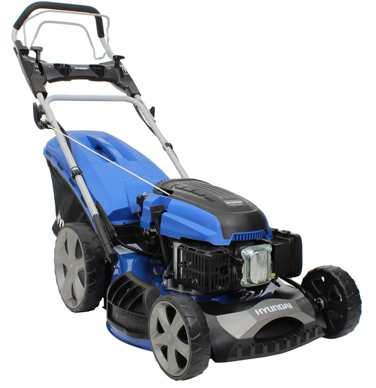

Hyundai HYM510SPE
El Hyundai HYM510SPE és un tallagespa d'alt rendiment, perfecte per a l'ús domèstic i professional. Amb el seu potent motor de 173 cc i una amplada de tall de 51 cm, aquest tallagespa ofereix un rendiment excepcional en qualsevol tipus de gespa. A més, compta amb un sistema d'ajust d'alçada de tall que permet adaptar el tall a les teves necessitats específiques.
El disseny robust i ergonòmic del Hyundai HYM510SPE el converteix en una opció ideal per a usuaris que busquen un tallagespa durador i fàcil de maniobrar. El sistema de pinta per a gespa assegura un tall net i uniforme, fins i tot prop dels marges.
No esperis més i adquireix el teu Hyundai HYM510SPE per gaudir d'un jardí perfecte en tot moment.
Compra ara